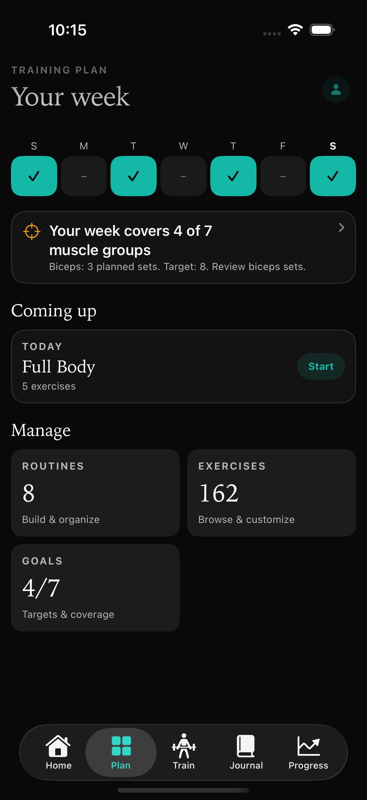

Pick up where
you left off.
Your last session should help your next one.
Keep your routines ready and your previous weights and reps close. Log a set, check your rest and stay with your workout.
Routines, logging and workout history are free.
